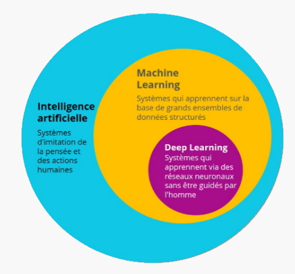
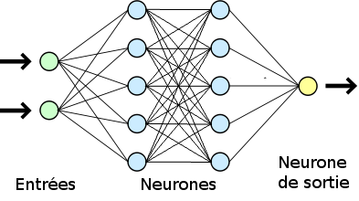

A. L'assistance aux calculs et aux prévisions
L'algorithmique trouve sa place dans de nombreux domaines scientifiques puisqu'il peut permettre d'effectuer une série de calculs infiniment plus rapidement qu'un être humain. Ainsi, nous la retrouvons dans des domaines tels que les Mathématiques mais aussi en Physique ou en Chimie. Ainsi, l'algorithmique permet à l'homme d'interagir avec la machine à travers divers langages, de nombreux langages informatiques spécialisés ont pu voir le jour.
B. Le « machine learning » et l'intelligence artificielle
Dernièrement, l'algorithmique est un élément essentiel de ce qui compose le réseau neuronal de ce que l'on appelle intelligence artificielle ou en abrégé, IA.
En effet, l'IA constitue un élément majeur du XXIe siècle puisqu'on peut la retrouver dans pratiquement tous les objets connectés. L'algorithme dit d'apprentissage automatique cherchera, à travers une série de calculs et de raisonnements complexes informatisés, à répondre à vos besoins et s'adapter selon ces derniers.
Grâce à cela, l'IA est conçue pour avoir la particularité d'évoluer dans le temps grâce aux données qui lui sont fournies (machine learning basé sur le deep learning). Celle-ci peut être utilisée afin de reconstruire, par exemple, une image dont certaines parties seraient manquantes ou peu reconnaissables. (pour en savoir plus, visitez cet article)
Néanmoins, l'algorithme de l'intelligence artificielle atteint très ses limites au-delà de la résolution de problèmes mathématiques puisqu'il ne permet pas de prendre de décisions éthiques contrairement à nous, êtres humains.

Ci-dessus, nous pouvons voir ce que l'on appelle réseau neuronal. Ce fonctionnement basé sur des mathématiques avancées (probabilités et statistiques) sont le fondement d'un algorithme permettant le fonctionnement d'une intelligence artificielle (et donc de machine learning.)
C. Un dépassement considérable des capacités humaines
Grâce à l'usage de technologies avancées, combinées à des algorithmes puissants, la résolution de problème ainsi que l'anticipation n'ont jamais été aussi précises et concises qu'à l'heure actuelle. En effet, de simples algorithmes tels qu'utilisés en Mathématiques (ex: algorithme du simplexe, algorithme pour le
calcul d'une base de Gröbner, théorie des graphes, etc.…) mais aussi en Physique et en Chimie (ex: algorithmes de comparaisons d'analyses moléculaires,
analyse et prédiction du mouvement, etc.…) se résolvent en une fraction de seconde grâce à ceux-ci.
L'intelligence artificielle prend sa place dans de nombreux entres cas tels que l'analyse de données en masse : la Data Science dont nous parlerons prochainement.